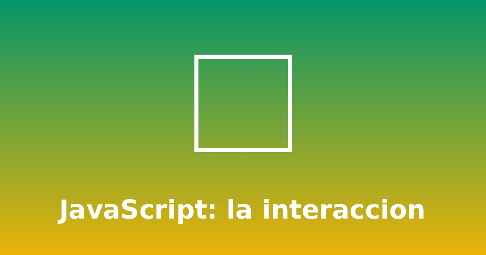

Dando vida a la página con JavaScript
Publicado el 24 de noviembre de 2026

Cierro esta pequeña serie de entradas con JavaScript, el lenguaje de programación que permite que una página web deje de ser un documento estático y pueda reaccionar a lo que hace el usuario: un clic de ratón, enviar un formulario, animaciones, temporizadores, etc.
¿Qué aporta JavaScript que no tienen HTML y CSS?
HTML aporta la estructura y CSS el aspecto visual, pero ninguno de los dos puede por sí solo calcular valores, validar lo que el usuario escribe en un formulario antes de enviarlo, mostrar u ocultar elementos al pulsar un botón o pedir datos al servidor sin tener que recargar toda la página. Para todo eso está JavaScript, que se ejecuta directamente en el navegador del cliente.
Un ejemplo clásico y muy sencillo: un botón que, al ser pulsado, cambia el texto de un párrafo en la página.
<button id="boton">Haz clic aquí</button>
<p id="mensaje">Aún no has pulsado el botón.</p>
<script>
const boton = document.getElementById("boton");
const mensaje = document.getElementById("mensaje");
boton.addEventListener("click", () => {
mensaje.textContent = "¡Gracias por hacer clic!";
});
</script>Y a continuación tienes ese mismo botón funcionando en vivo en esta página:
👇 Pulsa el siguiente botón para comprobar el funcionamiento:
Aún no has pulsado el botón.
Lo que he aprendido en esta primera toma de contacto
- El DOM (Document Object Model) es la representación en memoria del árbol HTML que JavaScript puede consultar y modificar en tiempo real. Cuando hacemos document.getElementById(...), estamos seleccionando un elemento concreto para cambiar su contenido, su estilo o sus atributos.
- Los eventos (click, submit, input, etc.) son el mecanismo mediante el cual el navegador avisa a nuestro código de que ha ocurrido una acción del usuario, y podemos capturarlos con addEventListener o con atributos como onclick.
- Que la combinación de los tres lenguajes (HTML para el esqueleto, CSS para la apariencia y JavaScript para el dinamismo) es la base indispensable sobre la que funciona toda la web moderna.
Cierre de esta serie
Con estas tres entradas doy por finalizada la Actividad 1 de DAR: hemos visto cómo montar la estructura básica en HTML, cómo darle un diseño limpio y agradable con CSS, y cómo dotar a la web de interactividad real con JavaScript. Ha sido un ejercicio muy formativo para entender los pilares del desarrollo frontend.

Escrito por Estudiante de DAR, que está dando sus primeros pasos en el desarrollo de aplicaciones en red.